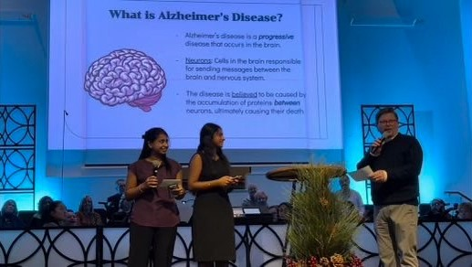

What is Alzheimer's Disease?
Alzheimer's disease, a complex progressive condition that occurs in the brain, primarily affects memory, cognitive function, and the ability to perform daily activities. It is believed to be caused by the accumulation of proteins amyloid-beta and tau between neurons.
Risk Factors
- Age: As you grow older, your chances of developing Alzheimer's increases.
- Genes: If Alzheimer's disease runs in your family, your chances of developing the disease may increase, but you are not guaranteed to get it.
- Lifestyle Factors: Certain lifestyle choices such as smoking and alcohol consumption can contribute to cognitive decline.
Symptoms
- Those who suffer from Alzheimer's disease may experience a wide range of symptoms that gradually impact cognitive abilities and behavior. Initially, individuals might notice subtle memory lapses, such as forgetting recent conversations or appointments.
- As Alzheimer's disease progresses, the symptoms intensify, resulting in significant challenges in memory retention, difficulty with problem-solving and decision-making, confusion about time and place, language problems, changes in mood or personality, withdrawal from social activities, and struggles with completing familiar tasks.
- These symptoms, varying in intensity and patterns, significantly impact everyday life and signal the need for support and understanding from caregivers and the community.
Reduce Your Risk
While some risk factors cannot be altered, adopting a healthy lifestyle, staying mentally and socially active, and managing health conditions effectively can potentially reduce the risk of Alzheimer's disease.
- Regular Exercise: Known to increase blood flow to the brain and support the survival and growth of neurons through protein production.
- Healthy Diet: Having a balanced diet containing healthy fats, whole grains, and limited alcohol intake can promote overall brain health.
- Mental Stimulation: Engaging in mentally stimulating activities such as puzzles or crosswords can lead to improved neuroplasticity.